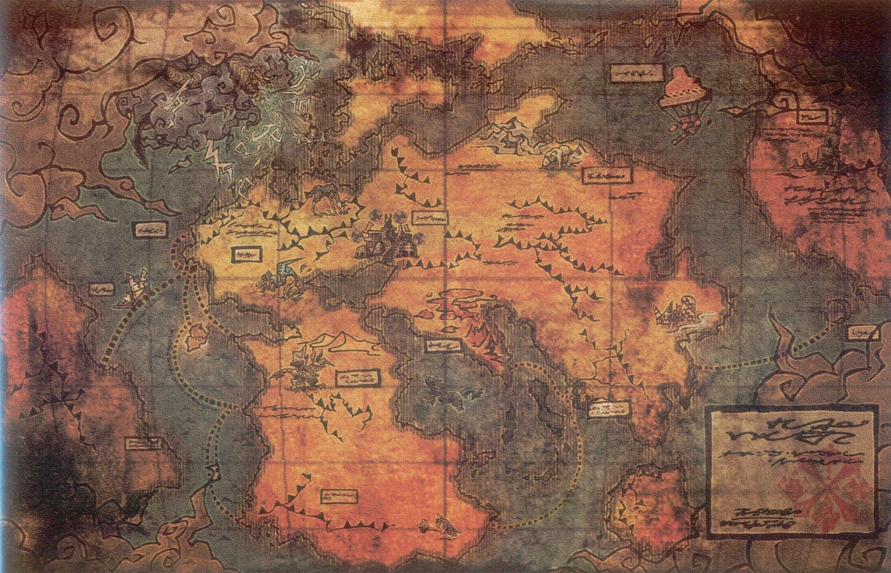

Aldeas
Descubre las diferentes aldeas y ciudades que pueblan el mundo de Monster Hunter.
Ver másLa enciclopedia definitiva del universo Monster Hunter
Bienvenido a la Monster Hunter Wiki, tu fuente de información sobre el vasto y emocionante mundo de Monster Hunter. Aquí encontrarás todo lo que necesitas saber sobre aldeas, monstruos, armas y mucho más. Desde las aldeas más icónicas hasta los monstruos más temibles, te guiaremos a través de este universo lleno de aventuras y desafíos.
Descubre las diferentes aldeas y ciudades que pueblan el mundo de Monster Hunter.
Ver másConoce a las criaturas que habitan este mundo y aprende a cazarlas.
Ver másDomina las 14 armas diferentes y encuentra tu estilo de combate.
Ver másLa Aldea de Moga es un pequeño asentamiento pesquero ubicado en una isla tropical. Es el hogar del cazador en Monster Hunter 3 Ultimate. La aldea es conocida por su ambiente relajado y sus habitantes amigables, pero recientemente ha sido amenazada por el Leviatán Ceadeus, que causa maremotos que afectan a la aldea.
La Aldea de Pokke es un pueblo montañoso situado en una región fría, apareciendo por primera vez en Monster Hunter Freedom 2. Es conocida por su Gremio local y su taller de herrería. La aldea tiene una atmósfera cálida y acogedora a pesar del clima frío, y es el punto de partida para explorar la Montaña Nevada.
Zohshia es un monstruo legendario conocido por su ferocidad y tamaño imponente. Solo los cazadores más experimentados se atreven a enfrentarlo.
Fatalis es uno de los dragones ancianos más temidos del universo Monster Hunter. Su poder y destrucción son legendarios.
Las Dual Blades son armas rápidas y ágiles, ideales para cazadores que prefieren la velocidad y los combos continuos.
La Great Sword es un arma poderosa que inflige gran daño con cada golpe. Requiere precisión y paciencia para dominarla.